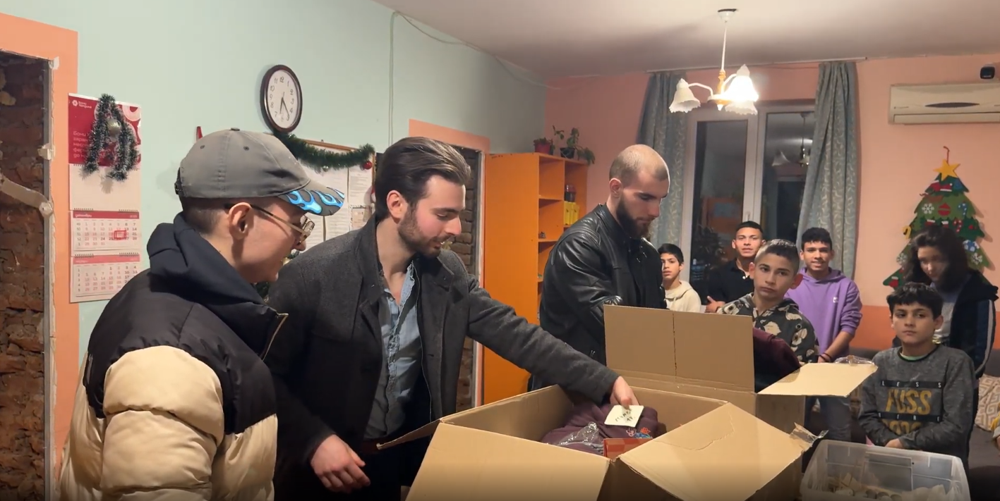
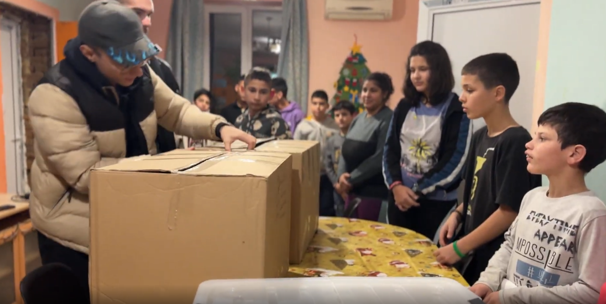
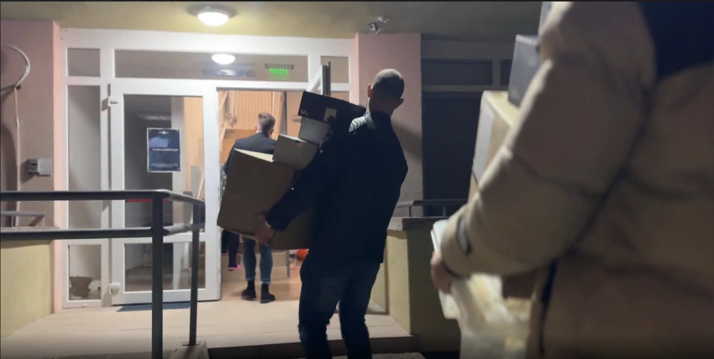
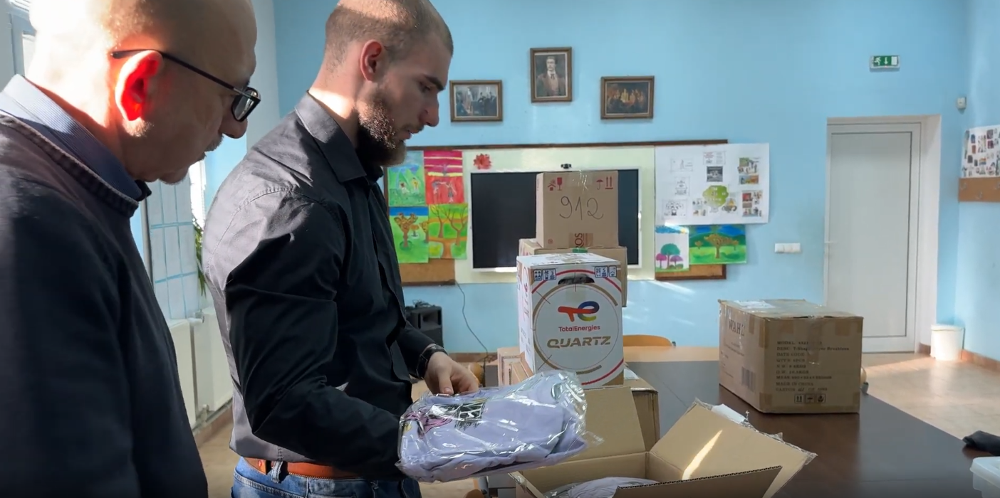
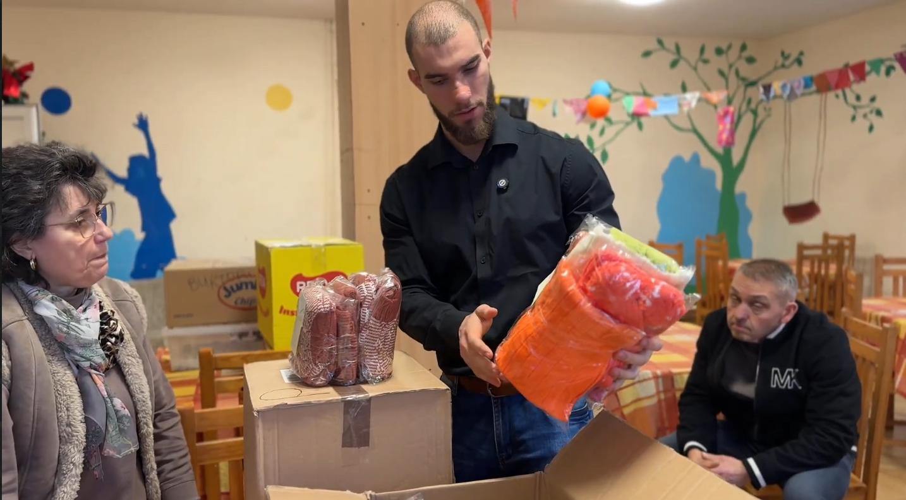

Към текущата кампания
Коледа 2025
Нашата първа кампания — и доказателство, че заедно можем да направим невероятни неща.
4,514€
събрани средства
150+
деца облечени с топли дрехи
57
дарители
През декември 2025 стартирахме кампанията „Подари Топлина" с цел да осигурим топли дрехи за деца от финансово уязвими семейства в Северозападна България. Благодарение на невероятната подкрепа на 57 дарители, събрахме 4,514 евро и закупихме топли шапки, блузи и панталони за над 150 деца от Видраре, Роман и Ловеч.
На 19 декември обиколихме селата и лично раздадохме дрехите на децата. Целият процес беше документиран и споделен публично.
Моменти от кампанията





Нашите дарители
Благодарим на всички, които направиха тази кампания възможна
Данчо Дачев
Александър Дончев
Венцислав Мотовски
НВП ООД
Димитър Маренов
Михаил Михайлов
Петко Желязков
Миглена Жишева
Марио Кирилов
Добромир Съйков
Мартин Йотов
Kamen Velev
Теодора Димова
Красимир Костов
Габриел Вълков
Валентин Петров
Николай Костов
Асен Кемилев
Кристиян Тасев
Виктория Пенчева
Стоян Николов
Николета Динкова
Таня Русева
Михаела Матекова
Елица Колева
Валентина Теодосиева
Виктор Витанов
Miroslava Boeva
Валентина Маренова
Hr VN Grancharov
Katerina Dancheva
Дилян Динев
Евгени Михайлов
Божидара Темелкова
Виктори Симчева
Дария Аврамова
Стилиян Таневбекярски
Моника Янева
Теодора Николова
Петър Тенев
Михаил Дончев
Емил Гълъбов
Асен Михайлов
Zlatin Mingov
Zhivko Zhechev
Tanya Kostadinova
Gloriq Grigorova
Diana Grigorova
Валентина Радиева-Маренова
Kalina Midyurova
Kiril Marinov
Kristijan Lazarev
Теодор Тумбалов
Виктория Сарабейска
Божидар Пехливанов
Станислав Илиев
Richard Nikolov